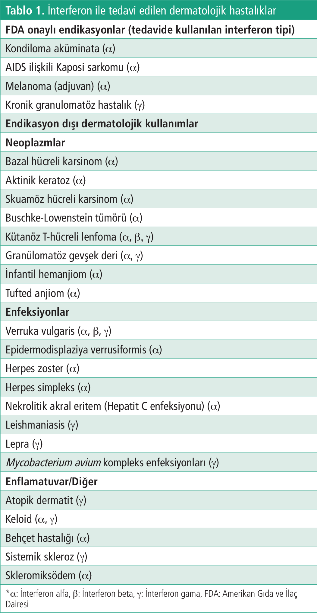

Derleme
Dermatolojide İnterferon Tedavisi
1 İstanbul Üniversitesi-Cerrahpaşa, Cerrahpaşa Tıp Fakültesi, Deri ve Zührevi Hastalıkları Anabilim Dalı, İstanbul, Türkiye
Anahtar Kelimeler: Dermatolojidermatoonkolojiinterferontedavi
Keywords: Dermatologydermatooncologyinterferonstreatment
Geliş: 12.02.2019Kabul: 22.05.2019Yayın: 24.09.2020
s. 90-95
Özet
ÖZET
İnterferon (IFN), antiviral, antiproliferatif ve immünoregulatuvar etkileri bulunan terapötik olarak kullanılan ilk sitokindir. Dermatolojide Amerikan Gıda ve İlaç Dairesi onaylı olarak kondiloma aküminata, AIDS ilişkili Kaposi sarkomu, melanom ve kronik granülomatöz hastalıkta kullanılmaktadır. Endikasyon dışı kullanımda kütanöz T-hücreli lenfoma, bazal hücreli karsinom, skuamöz hücreli karsinom, aktinik keratoz, keratoakantom, keloid, verruka vulgaris, hemanjiomlar ve Behçet hastalığı gibi sistemik hastalıklar bulunmaktadır. IFN-α2a, α2b, β ve γ en sık kullanılan formlardır. Bu derlemede IFN’nin etki mekanizması, antiviral, antiproliferatif, immünoregulatuvar etkileri, dermatolojideki klinik kullanımı, yan etkileri ve kontraendikasyonlarından bahsedilecektir.
Tam Metin
Giriş
İnterferonlar (IFN), 1957 yılında Isaacs ve Lindenmann tarafından keşfedilen, çeşitli uyaranlara karşı hücrelerden salgılanan antiviral etkiye sahip proteinlerdir. Terapötik olarak kullanılan ilk sitokindir (1). Antiviral, antiproliferatif ve immünoregülatuvar etkileri bulunmaktadır (2).
Nükleotid dizilerine, spesifik reseptörlerine ve kimyasal yapılarına göre tip 1 IFN, tip 2 IFN ve IFN benzeri sitokinler olmak üzere sınıflandırılır (3). Tip 1 IFN’ler, insanlarda IFN-α, β, ω, ε, κ, tip 2 IFN ise IFN-γ’den oluşmaktadır. IFN benzeri sitokinler ise interlökin (IL)-28A, IL-28B ve IL-29 olmak üzere tip 1 IFN gibi işlev gören sitokinlerden oluşmaktadır (1). Tip 1 veya tip 2 IFN tarafından kullanılan reseptörlerden farklı olan bir heterodimerik reseptör kompleksi üzerinden sinyal vermeleri nedeniyle hem tip 1 hem de tip 2 IFN’lerden farklıdırlar (4).
Orijinlerine göre bakıldığında IFN-α, insanda en sık bulunan sitokin olup lökosit kökenlidir. IFN-β fibroblast, IFN-γ ise T lenfositlerde üretilir. IFN-γ, intraselüler patojenlere karşı hücresel immün cevapta rol oynarken, IFN-α ve β’nin antiviral aktivitelerini artırmaktadır (5).
Farmakoloji ve Etki Mekanizması
Her biri 165-172 aminoasitten oluşan 30’dan fazla IFN-α alt tipi vardır. IFN-α-2a ve IFN-α-2b sadece bir amino aside göre farklılık gösterir. IFN-β, IFN-α ile %29 oranında yapısal olarak benzer özelliklere sahip iken IFN-γ ile hiçbir yapısal benzerliği yoktur (6).
IFN’lerin etki edebilmesi için, hedef hücre yüzeyindeki spesifik reseptörlere bağlanması gerekir. Tip 1 IFN’ler, IFN-αR1 ve IFN-αR2 gibi iki peptidden oluşan bir reseptör tarafından tanınırlar. Tip 2 IFN olan IFN-γ, IFNGR-1ve IFNGR-2 zincirlerinden oluşan reseptörlerine bağlanır. IFN benzeri sitokinler ise λR1 IFN ve IL-10R2 alt birimleri tarafından oluşturulan reseptörler üzerinde etkilidir. Bu reseptörler yoluyla JAK-STAT bağımlı ve bağımsız sinyal yolakları üzerinden gen ekspresyonunu düzenleyerek antiviral, antiproliferatif ve immünoregülatuvar etki gösterirler (3).
Antiviral Etkileri
IFN-α, IFN-β ve IFN-γ yüksek düzeyde antiviral etki göstermektedir. Antiviral aktivite, doğal ve kazanılmış immünitenin aktivasyonu sonucu oluşur. Bu aktivasyon ile protein kinaz RNA, ribonükleaz 2-5A yolağı ve Mx protein gibi bazı antiviral ajanlar ve birçok apoptotik yolak indüklenir. Virüslerin hücrelere bağlanması ve viral partiküllerin hücrelere penetrasyonu engellenir. Transkripsiyon ve translasyon aşamalarının bozulması ile virion oluşumu önlenir ve viral m-RNA yıkımı ile viral protein zincir sentezi engellenmiş olur (3).
Antiproliferatif Etkileri
Mitoz inhibisyonu, çeşitli büyüme faktörlerinin inhibisyonu, c-myc, c-ras, c-fos gibi onkogenlerin Down-regülasyonu yolu ile antiproliferatif etki gösterirler (5). MHC klas 1 antijenlerinin ekspresyonunu, NK ve sitotoksik T-hücrelerinin aktivasyonunu, sitokin indüksiyonu ve endojen IFN üretimini artırırlar (7,8).
İmmünoregülatuvar Etkileri
Sağlam hücreler ve tümör hücreleri üzerinde MHC klas 1 ve 2 antijen ekspresyonunu artırma ve NK hücre sayısı ve aktivitesinde artış göstermektedirler (5).
Klinik Kullanımı
IFN’ler, intralezyonel veya parenteral olarak kullanılmaktadır. İntramusküler veya subkütan uygulama ile IFN-α’nın sistemik emilimi %80, IFN-γ’nin %70’tir. Enjeksiyondan 3-12 saat sonra maksimum seviyeye ulaşır ve 24 saatte kandan tamamen temizlenir. Renal katabolizmaya uğrarlar. Pegile edilmiş IFN-α formları, terapötik etkilerini uzatan polietilen glikol yan zincirleri içerir. Bu formlar ile haftada bir uygulama kolaylığı sağlanır (5,7). IFN’nin dermatoloji alanındaki kullanımı Tablo 1’de gösterilmiştir.
FDA Onaylı Endikasyonlar
Kondiloma Aküminata
Sıklıkla IFN-α tedavisi uygulanmaktadır. İntralezyonel veya topikal uygulama önerilmektedir. Lokal bir hastalık olduğu için yerel uygulamaya daha duyarlıdır ve sistemik uygulama ile daha düşük intralezyonel etki oluşmaktadır. Yapılan bir derlemede lokal uygulamanın sistemik IFN tedavisi ve plaseboya göre daha etkili ve etki süresinin uzun olduğu bildirilmiştir (9). Tedavi maliyeti ve uygulama sıklığı nedeniyle diğer tedavilerden fayda görmeyen hastalarda kullanılmaktadır.
AIDS İlişkili Kaposi Sarkomu
IFN-α2a ve 2b tek başına veya antiretroviral tedavi ile kombine olarak kullanılmaktadır. Zidovudin ile kombine veya vinblastin ve bleomisin tedavisi sonrası idame tedavi olarak kullanılabilmektedir. Antiretroviral tedavi ile birlikte kullanıldığında, plazma HIV p24 antijenlerinin baskılandığı tespit edilmiştir. Yüksek doz IFN tedavisi yerine, düşük doz IFN ile zidovudinin kombine kullanılması Kaposi sarkomunun gerilemesinde daha etkilidir (10,11). Yapılan bir çalışmada zidovudin tedavisi altında olan HIV ile enfekte Kaposi olgularından bir gruba 1 MiU/gün IFN-α, diğer gruba 8 MiU/gün IFN-α tedavisi verilerek yanıtları karşılaştırılmış ve daha yüksek doz kullanan grupta yanıt %31 oranda yüksek bulunmuştur (12).
Melanom
Yüksek riskli melanomlarda adjuvan tedavi olarak IFN-α tedavisi kullanılmaktadır. Evre 2B ve evre 3 melanomlarda cerrahi sonrası nüks gelişen olgularda önerilmektedir (13). En etkili doz şeması net olarak belirlenememiştir. Yüksek doz tedavi Amerika ve Avustralya’da kullanılırken, orta ve düşük doz tedavi Avrupa’da kullanılmaktadır. Pegile IFN ise sadece İsviçre’de mikrometastaz ve ülsere primer tümörler için kullanımı onaylanmıştır (14). Yüksek doz tedavi 20 MiU/m2 intravenöz yolla haftada 5 gün süreyle 4 hafta uygulanır. İdame tedavi 10 MiU/m2/gün subkütan yolla 48 hafta devam edilmektedir (13). Yüksek riskli melanomda IFN kullanımı ile ilgili yapılmış bir meta-analiz çalışmasında IFN’nin relaps riskini azalttığı ve daha az oranda toplam surviye katkı sağladığı gösterilmiştir. Ülsere tümörler üzerinde, ülsere olmayan tümörlere göre etkinliğin daha yüksek olduğu belirtilmiştir (15).
Melanom ve immün hücreler üzerindeki MHC-1 ekspresyonu üzerinde uyarıcı etki, melanom hücrelerinin proliferasyonunun inhibisyonu ve doz bağımlı proapoptotik mekanizmasıyla etki göstermektedir (16).
Kronik Granülomatöz Hastalık
NADPH oksidaz bağımlı fagosit fonksiyonunun bozukluğu ile karakterize, yenidoğan veya çocukluk döneminden itibaren ciddi bakteriyel ve fungal enfeksiyonlar ile seyreden bir hastalıktır. Atopik dermatit benzeri semptomlar, sistemik ya da derin yerleşimli deri enfeksiyonları, fasiyal granülom, diskoid lupus eritematozus ve seboreik dermatit gibi deri bulguları hastalığa eşlik etmektedir.
Bu hastalıkta IFN-γ’nin makrofajlardaki reaktif oksijen ara ürünleri üretimini artırdığı ve mikroorganizmaların ölümüne yol açtığı gösterilmiştir. IFN-γ tedavisi ile belirgin bir toksisite göstermeksizin, enfeksiyon sıklığında, hastaneye yatış sıklığında ve yaşam kalitesinde düzelme sağlandığı saptanmıştır. Vücut yüzey alanı >0,5 m2 çocuklarda 50 mcg/m2, yüzey alanı <0,5 m2 çocuklarda 1,5 mcg/m2 şeklinde subkütan yolla haftada 3 gün uygulanmaktadır (17).
Endikasyon Dışı Dermatolojik Kullanımlar
Bazal Hücreli Karsinom
İlk tedavi seçeneği cerrahi olsa da intralezyonel olarak IFN, 5-flurourasil, bleomisin tedavileri monoterapi veya kombine tedavi şeklinde uygulanabilmektedir. IFN-α2a ve α2b, IFN-β, IFN-γ bazal hücreli karsinom tedavisinde kullanılmaktadır. Önerilen tedavi rejimi, intralezyonel olarak 1,5 MiU haftada 3 kez, 3 hafta boyuncadır. Bazal hücreli karsinomun yüksek riskli grupları olan morfeiform, infiltratif ve rekürren olgular çalışmalara dahil edilmemiştir. Tedaviden 3 ay sonrasında dermatolojik muayene ile birlikte histopatolojik değerlendirmenin yapılması önerilir (5,18).
Skuamöz Hücreli Karsinom
Cerrahi tedavinin uygulanamadığı veya diğer tedavilerin başarısız olduğu durumlarda kullanılabilmektedir. IFN-α en sık kullanılan ajandır. Yapılan bir çalışmada baş-boyun skuamöz hücreli karsinomunda hücrelerin HLA-1 aleli ve tümör antijeni ekspresyonuna rağmen, kütanöz T-lenfositler tarafından in vitro olarak iyi tanınamamaktadır (19). IFN-γ ile T-lenfositlerin antijen sunumunun arttığı gösterilmiştir (5). Bir derlemede 31 invaziv ve 9 in situ skuamöz hücreli karsinom olgusuna IFN-α tedavisi uygulanmış, invaziv olgularda %90, in situ olgularda ise %89 oranında tam yanıt elde edilmiştir (18). Beş yıl içerisinde 9 kez nükseden skuamöz hücreli karsinom olgusunda intralezyonel olarak IFN- α2b, 1,5 MiU, haftada 3 kez, 8 hafta süreyle uygulanmış ve 8 yıl takipte relaps gözlenmemiştir (20).
Aktinik Keratoz
IFN’nin aktinik keratozdaki kullanımı sınırlıdır. IFN-α2b ve β kullanılmaktadır. İntralezyonel olarak kullanılmakla birlikte bir çalışmada, içerisinde 30 MiU IFN-α2b bulunan topikal jel günde 4 kez, toplam 4 hafta süreyle, 24 aktinik keratoz olgusuna uygulanmıştır. Klinik yanıt gözlenmiş fakat plaseboya göre istatistiksel olarak anlamlı saptanmamıştır (21).
Kütanöz T-hücreli Lenfoma
IFN-α ve γ, kütanöz T-hücreli lenfoma tedavisinde primer olarak kullanılan IFN’lerdir. IFN-γ ile ilgili çalışmalar sınırlıdır, birkaç olgu serisi bildirilmiştir.
IFN-α, Th2 aktivitesini baskılarken, CD8-T hücrelerini ve NK hücrelerini aktive eder. Sezary hücrelerini ve normal T-hücresinin IL-4 ve IL-5 üretimini inhibe eder. Monoterapi veya kombine tedavi olarak fototerapi, retinoid veya fotoferez ile birlikte kullanılmaktadır (22). Optimal doz ve süre belirtilmemiş olsa da, IFN-α genellikle uzun süreli uygulanmaktadır. Başlangıçta düşük doz başlanıp, dozu yükseltilen hastalar, başlangıçta yüksek doz ile başlanan hastalara kıyasla yüksek doz tedaviyi daha iyi tolere edebilmektedirler. Haftada 3 kez 1-3 MiU şeklinde düşük doz başlanıp, tolere edilebilirse 9-12 MiU/gün dozuna çıkılmaktadır. IFN-α monoterapide tüm evrelerde etkinlik göstermekle birlikte erken evrede daha etkilidir. %29-80 arasında yanıt oranı bildirilmiştir. IFN-α tedavisi en az 3 ay sürekli devam ettirildikten sonra 6-12 ayda kademeli bir şekilde doz düşürülerek, nüks gelişmediği takdirde sonlandırılmaktadır (23).
Keratoakantom
Sıklıkla spontan gerilemekle birlikte ilk tedavi seçeneği cerrahidir. Ancak cerrahi yapılamayan perioral veya periorbital bölgeler gibi anatomik alanlarda veya geniş tümörlerde IFN tercih edilebilir. IFN-α2a ve 2b kullanılmaktadır. Bir olgu serisine 3 MiU/hafta dozda IFN-α2b tedavisi uygulanmış, 5-7 enjeksiyon sonrası tama yakın iyileşme gözlenmiştir (24).
Buschke-Löwenstein Tümörü
Nadiren metastatik olabilen lokal agresif bir tümördür. Cerrahi, radyoterapi ve kemoterapi tedavi seçenekleridir. Ancak tedavilerin etkinliği düşük ve nüks riski bulunmaktadır. IFN tedavisi sistemik veya intralezyonel uygulanabilmektedir. Haftada 3 kere 10 MiU IFN-α uygulanan bir olguda 12 ayda tam yanıt alınmış, tedaviye 28 ay devam edilerek 4 aylık gözlemde nüks olmadığı belirtilmiştir (25). Oral retinoid ile kombine olarak kullanılan intramüsküler IFN-γ tedavisi sonrası 3 ayda lezyonlar tamamen gerilemiş, 2 yıldan uzun süreli takipte nüks gözlenmemiştir (26).
Keloid/Hipertrofik Skar
İn vitro çalışmalar, IFN-α, IFN-β ve IFN-γ’nin keloidal fibroblastlar tarafından üretilen kollajen tip 1 mesajcı RNA üretimini azalttığı ve IFN-α2b’nin kollajenaz aktivitesini artırdığını göstermiştir (27). IFN-α ve IFN-γ tedavide kullanılmaktadır. Cerrahi tedaviler ya da intralezyonel steroid enjeksiyonlarına yanıt vermeyen hastalarda denenebilir. IFN-α2b, keloidlerde intralezyonel olarak 1,5 MiU günde 2 kez veya hipertrofik skarda haftada 3 kez uygulanmaktadır (28).
İki haftada bir intralezyonel steroid yapılan 20 keloid olgusu ile intralezyonel steroid ile birlikte haftada 2 kez intralezyonel IFN-α2b uygulanan 20 keloid olgusunun karşılaştırıldığı bir çalışmada, keloid lezyonlarının kalınlık ve hacim azalmasında kombine grupta tek başına intralezyonel steroid verilen gruba göre belirgin şekilde azalma gösterdiği belirtilmiştir (29).
Hemanjiom
IFN-α2a anjiyogenezis inhibisyonu nedeniyle hayatı tehdit edici veya kortikosteroidlere yanıt vermeyen olguların tedavisinde kullanılmıştır. Spastik dipleji komplikasyonu gelişen olgular ortaya çıkması nedeniyle kullanımı sınırlanmıştır (30).
Behçet Hastalığı
Haftada 3 kez subkütan yolla 3 MiU ile başlanıp 18 MiU’ya çıkılarak verilen IFN-α2a uygulamasında başarılı sonuçlar bildirilmiştir. Göz, mukokütanöz ve eklem tutulumunda IFN tedavisi kullanılmaktadır (31). Erken relapsları önlemek için haftalık 1 veya 2 kez idame dozları gereklidir.
Yan Etkileri (6)
Yan etkiler, doza bağımlıdır. Tedavinin ilerleyen dönemlerinde azalır veya kaybolurlar. Tedavi kesildikten sonra hızla kaybolurlar (6).
⇒ Deri bulguları: IFN uygulama bölgesinde psoriasis plağı gelişebileceği gibi, psoriasisinde alevlenme görülebilir. Diğer görülen deri bulguları alopesi, kserosiz ve vitiligodur. Enjeksiyon yapılan bölgede postenflamatuvar pigmentasyon, ülserasyon ve granülom görülebilmektedir (6).
⇒ Grip benzeri semptomlar: En sık görülen yan etkidir. Eklem ağrısı, baş ağrısı, kas ağrısı, halsizlik, titreme ve ateş ortaya çıkabilmektedir. Enjeksiyondan 1-2 saat önce profilaktik olarak alınan asetaminofen, aspirin ya da non-steroidal antienflamatuvar ilaçlar (örneğin; ibuprofen) bu yan etkileri önleme açısından faydalı olmaktadır (6).
⇒ Nörolojik ve psikiyatrik yan etkiler: Spastik dipleji, 1,0- 3,6 MiU dozunda IFN-α2a ile tedavi edilen infantil hemanjiom hastalarında raporlanmıştır. Bu durumdan enjeksiyonların içinde koruyucu olarak görev yapan benzil veya fenil alkolün sorumlu olabileceği, bu nedenle koruyucu içermeyen tuzlu solüsyonlar kullanılması önerilmiştir. Yenidoğanların santral sinir sisteminin henüz yeterince olgunlaşmamasına bağlı da gelişebileceği bildirilmiştir (6). İntihar düşüncesi, intihar girişimi ve depresif davranış bozuklukları, görülebilen diğer yan etkiler arasındadır (6).
⇒ Gastrointestinal yan etkiler ve kemik iliği süpresyonu: Bulantı, kusma, diyare, anoreksi, hepatit görülebilmektedir. Yüksek doz IFN kullanan hastalarda veya kemik iliği süpresyonu yapabilecek ek ilaç kullanımı olan hastalarda kemik iliği süpresyonu gelişebilmektedir. Karaciğer fonksiyon testleri ve tam kan sayımı rutin aralıklarla bakılmalıdır (6).
⇒ Kardiyovasküler yan etkiler: Ciddi hipotansiyon, aritmi veya taşikardi IFN tedavisi ile ortaya çıkabilmektedir. Aritmi hikayesi olan veya yakın zamanda miyokard enfarktüsü gelişen hastalar yakın takip edilmelidir. Dozun azaltılması veya tedavinin sonlandırılması ile bu yan etkiler düzelmektedir (6).
⇒ Rabdomiyoliz: Rabdomiyoliz bazen görülmekle birlikte yüksek doz IFN-α2b (20 MiU IV, günde 2 kez, 5 gün) en az bir hastada fatal seyredebilmektedir. Artmış serum kreatin kinaz seviyeleri, dozun düşürülmesi veya tedavinin kesilmesi için uyarıcı olmalıdır (6).
İlaç Etkileşimleri (6)
IFN-α2a, sitokrom p450 enzim inhibisyonu ile aminofilinin atılımını azaltır. İnterferon diğer miyelosüpresif (zidovudin gibi) veya nörotoksik (örneğin; vinka alkaloidler) ilaçlarla birlikte kullanıldığında dikkatli olunmalıdır. Aynı zamanda IL-2 ile birlikte uygulandığında böbrek yetmezliği riski artabilir (6).
Gebelik (6)
Gebelik kategorisi C’dir. Fare sütüne geçmesine rağmen insan sütüne geçip geçmediği bilinmemektedir (6).
Kontraendikasyonları (6)
Kesin kontraendikasyonları, fare immünoglobülinleri, IFN-α ve IFN-γ formülasyonlarına karşı hipersensitivite gelişimidir. Rölatif kontraendikasyonları, kardiyak aritmiler, depresyon ve diğer psikiyatrik hastalıklar, lökopeni, koagülopatiler, organ transplantasyonu ve gebeliktir.
Sonuç
IFN’lerin farklı reseptörler üzerinden etki etmesiyle dermatolojide değişik klinik kullanımları bulunmaktadır. Çalışmaların genişletilmesiyle selektif reseptörlerin keşfi, dermatolojide farklı klinik kullanımların ortaya çıkmasına olanak verecektir. Aynı zamanda doz şemasının standardize edilebilmesi için daha geniş çalışmalara ihtiyaç vardır.

Kaynaklar
1.Pestka S, Krause CD, Walter MR. Interferons, interferon-like cytokines, and their receptors. Immunol Rev 2004; 202: 8-32.
2.Ismail A, Yusuf N. Type I Interferons: Key Players in Normal Skin and Select Cutaneous Malignancies. Dermatol Res Pract 2014; 2014: 847545.
3.Bandurska K, Król I, Myga-Nowak M. [Interferons: between structure and function]. Postepy Hig Med Dosw (Online) 2014; 68: 428-440.
4.Donnelly RP, Kotenko SV. Interferon-lambda: a new addition to an old family. J Interferon Cytokine Res 2010; 30: 555-564.
5.Kaçar S, Özuğuz P. İnterferonlar. Turkiye Klinikleri J Dermatol-Special Topics 2014; 7: 71-79.
6.Jackson J, Callen J. Systemic immunomodulators. Bolognia Ed. 4th edition. London, Elsevier, 2242-2244.
7.Arnaud P. [The interferons: pharmacology, mechanism of action, tolerance and side effects]. Rev Med Interne 2002;(23 Suppl 4): 449s-458s.
8.De Andrea M, Ravera R, Gioia D, Gariglio M, Landolfo S. The interferon system: an overview. Eur J Paediatr Neurol 2002;6 Suppl A:A41-6; discussion A55-8.
9.Yang J, Pu YG, Zeng ZM, Yu ZJ, Huang N, Deng QW. Interferon for the treatment of genital warts: a systematic review. BMC Infect Dis 2009; 9: 156.
10.Krown SE. AIDS-associated Kaposi’s sarcoma: is there still a role for interferon alfa? Cytokine Growth Factor Rev 2007; 18: 395-402.
11.Kirkwood J. Cancer immunotherapy: the interferon-alpha experience. Semin Oncol 2002; 29(3 Suppl 7): 18-26.
12.Shepherd FA, Beaulieu R, Gelmon K, et al. Prospective randomized trial of two dose levels of interferon alfa with zidovudine for the treatment of Kaposi’s sarcoma associated with human immunodeficiency virus infection: a Canadian HIV Clinical Trials Network study. J Clin Oncol 1998; 16: 1736-1742.
13.Di Trolio R, Simeone E, Di Lorenzo G, Buonerba C, Ascierto PA. The use of interferon in melanoma patients: a systematic review. Cytokine Growth Factor Rev 2015; 26: 203-212.
14.Dimitriou F, Braun RP, Mangana J. Update on adjuvant melanoma therapy. Curr Opin Oncol 2018; 30: 118-124.
15.Ives NJ, Suciu S, Eggermont AMM, et al. Adjuvant interferon-α for the treatment of high-risk melanoma: An individual patient data meta-analysis. Eur J Cancer 2017; 82: 171-183.
16.Domingues B, Lopes JM, Soares P, Pópulo H. Melanoma treatment in review. Immunotargets Ther 2018; 7: 35-49.
17.Filiz S, Uygun DF, Yeğin O. Chronic Granulomatous Disease. Turk J Immunol 2013; 1: 22-31.
18.Kirby JS, Miller CJ. Intralesional chemotherapy for nonmelanoma skin cancer: a practical review. J Am Acad Dermatol 2010; 63: 689-702.
19.López-Albaitero A, Nayak JV, Ogino T, et al. Role of antigenprocessing machinery in the in vitro resistance of squamous cell carcinoma of the head and neck cells to recognition by CTL. J Immunol 2006; 176: 3402-3409.
20.Hanlon A, Kim J, Leffell DJ. Intralesional interferon alfa-2b for refractory, recurrent squamous cell carcinoma of the face. J Am Acad Dermatol 2013; 69: 1070-1072.
21.Edwards L, Levine N, Smiles KA. The effect of topical interferon alpha 2b on actinic keratoses. J Dermatol Surg Oncol 1990; 16: 446-449.
22.Spaccarelli N, Rook AH. The Use of Interferons in the Treatment of Cutaneous T-Cell Lymphoma. Dermatol Clin 2015; 33: 731-745.
23.Jawed SI, Myskowski PL, Horwitz S, Moskowitz A, Querfeld C. Primary cutaneous T-cell lymphoma (mycosis fungoides and Sézary syndrome): part II. Prognosis, management, and future directions. J Am Acad Dermatol 2014; 70:223.e1-17; quiz 240-242.
24.Oh CK, Son HS, Lee JB, Jang HS, Kwon KS. Intralesional interferon alfa-2b treatment of keratoacanthomas. J Am Acad Dermatol 2004; 51(5 Suppl): S177-80.
25.Geusau A, Heinz-Peer G, Volc-Platzer B, Stingl G, Kirnbauer R. Regression of deeply infiltrating giant condyloma (Buschke-Lowenstein tumor) following long-term intralesional interferon α therapy. Arch Dermatol 2000; 136: 707-710.
26.Tian YP, Yao L, Malla P, Song Y, Li SS. Successful treatment of giant condyloma acuminatum with combination retinoid and interferon-γ therapy. Int J STD AIDS 2012; 23: 445-447.
27.Berman B. Biological agents for controlling excessive scarring. Am J Clin Dermatol 2010; 11(Suppl 1): 31-34.
28.Arno AI, Gauglitz GG, Barret JP, Jeschke MG. Up-to-date approach to manage keloids and hypertrophic scars: a useful guide. Burns 2014; 40: 1255-1266.
29.Lee JH, Kim SE, Lee AY. Effects of interferon-alpha2b on keloid treatment with triamcinolone acetonide intralesional injection. Int J Dermatol 2008; 47: 183-186.
30.Grimal I, Duveau E, Enjolras O, Verret JL, Giniès JL. [Effectiveness and dangers of interferon-alpha in the treatment of severe hemangiomas in infants]. Arch Pediatr 2000; 7: 163-167.
31.Wechsler B, Du-Boutin LT. [Interferons and Behçet’s disease]. Rev Med Interne 2002;(23 Suppl 4): 495s-499s.